A projectemet a kalandjátékok ihlették a számítógépes játékok klasszikus időszakából. Az irányításhoz csak az egeret kell használni. Lehet különböző helyszíneket felfedezni, tárgyakat felvenni, ezeket használni. A játékomat SDL 1.2 segítségével valósítottam meg, mely lehetővé tette a grafikai megjelenítést. A programban lehet továbbá a játékállást menteni és betölteni három különböző slotból, valamint némi extra tartalom is aktiválható a figyelmes játékosoknak. A történet a jövőben játszódik, egy lánynak kell segíteni bejutni a vizsgájára, ugyanis kisebb kellemetlenség érte reggel: elromlott a teleporter. Ezt kell segíteni megjavítani. A cél, hogy Tabulátor Rozália eljusson a vizsga helyszínére.
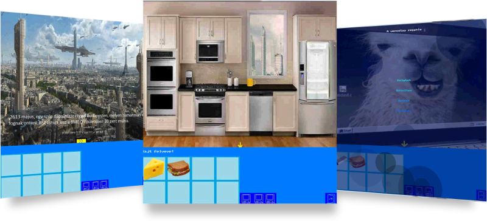A program a jól ismert Snake nevű játékot valósítja meg, melynek elkészítéséhez SDL-t használtam. A játék tartalmaz egy- és kétjátékos módot is. A játék célja a szokásos: az eledeleket felszedve minél nagyobbra növekedni anélkül, hogy a falnak, önmagának vagy esetleg a másik kígyónak ütközne a kígyó. Egyjátékos módban, megfelelő pontszám elérése esetén a játékos felkerülhet a nehézségi szintnek megfelelő dicsőséglistára. Kétjátékos mód esetén a játékosok a kurzormozgató nyilakkal és a WASD billentyűkkel irányíthatják a kígyójukat.
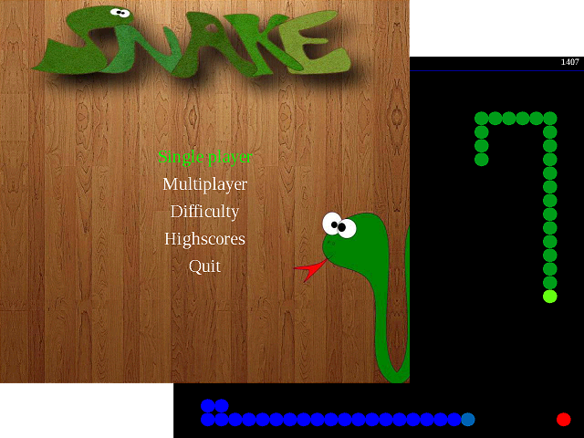A rendszer olyan magas szintű függvényeket biztosít, melyekkel könnyedén hozhatunk létre mozgó részecske rendszereket (animációkat). Létre lehet hozni kép alapján is. A részecskék képesek meghalni és szaporodni is. A paraméterek változtatásával magunk is létrehozhatunk új más viselkedésű és stílusú részecske rendszereket.
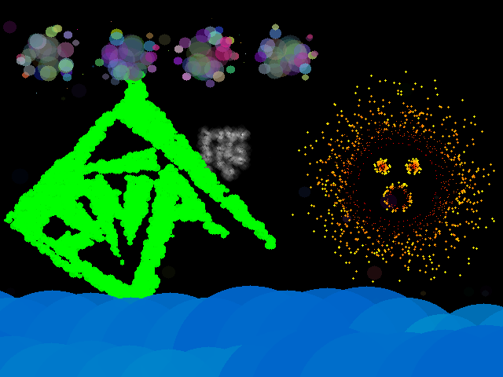A jól ismert PacMan újragondolt változata. PacPontokat kell enni - ezzel pontot szerezve - és menekülni kell a szellem elől. A játéknak vége van ha minden pontot megettünk, vagy elkapott a szellem. A játék végével a megszerzett ponthoz nevet rendelhetünk, ami így bekerülhet a highscore-ba. Az egész játék alatt kikapcsolható zene hallható. Felhasználóbarát menüvel rendelkezik. Irányítani a WSAD illetve a nyilak segítségével lehet. Két cheat került beépítésre, az egyik a konami code, a másikat pedig tessék megtalálni.
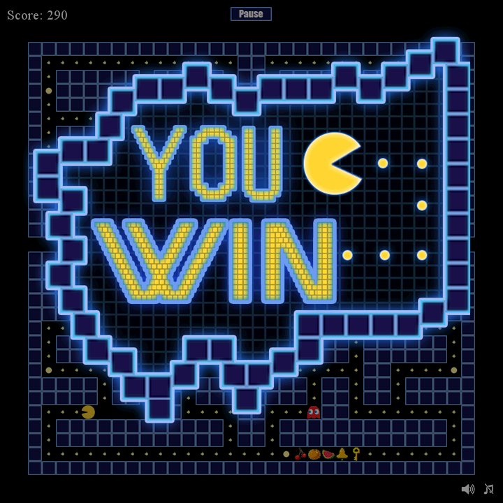A nagy házim egy hagyományos reversi játék, amit a gép ellen lehet játszani. A könnyebb átláthatóság érdekében a gép egy piros ponttal jelzi a következő lépését, mielőtt letenné a korongot. A játék felfüggeszthető a menü gombra kattintva, majd később ugyanonnan folytatható. Miután vége a játéknak, elindul a lépések visszajátszása.
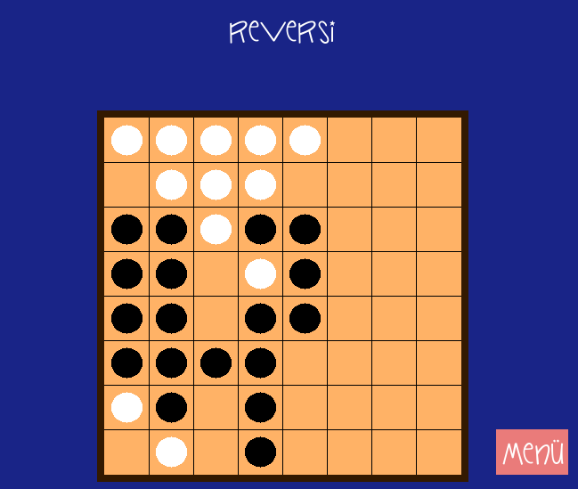Bomberman, PONG óta az egyik legjobb játék arra, hogy két ember összemérje képességeit. A két játékos egymást próbálja meg felrobbantani jól elhelyezett bombákkal. 8 pályán mérkőzhet meg a két játékos, miközben szabad felhasználású spriteokban gyönyörködhetnek. Akit untat a falak robbantgatása, az választhat CQB pályát is, ahol az első pillanattól kezdve folyik a harc.
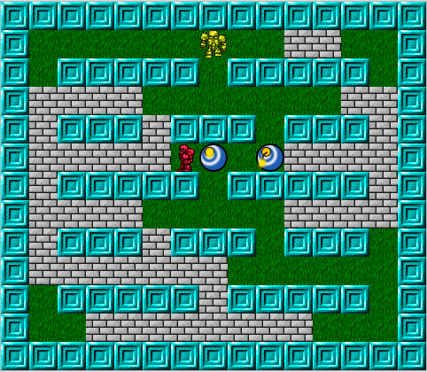A program egy olyan játék, ahol a felhasználó feladata, hogy eljuttasson egy pozitív töltést a célba. A töltést egy ágyúból lehet kilőni, ami a pálya bal szélén található. Az ágyú szöge állítható. A pályán különböző akadályok és töltések nehezítik a feladatot. A játékos szintén tud töltéseket elhelyezni a pályán, melyek segítségével célba tudja juttatni a töltést. A piros töltések a pozitívak, míg a kékek a negatívak. Mivel a kilőtt töltés pozitív, a kékek vonzzák és a pirosak taszítják. A program kiírja egy fájlba, hogy melyik pályát hány lövésből sikerült eltalálni, és azokat be is tudja olvasni.
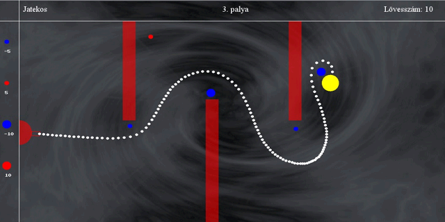Az általam készített kígyós játék SDL-lel készült, a hagyományos kígyós játék minden szabályát betartja. Menüvezérelt, ahonnan a felhasználó kiválaszthatja, hogy egy vagy két játékos módban szeretne játszani, megtekintheti a dicsőséglistát, beállíthatja, hogy fallal vagy fal nélkül szeretne játszani, illetve kiléphet a programból. Játék közben a program végig írja a kígyó(k) pontszámát, majd ha véget ért a játék, akkor fájlba írja az eredményt. Ebből a fájlból a dicsőséglista később megjeleníti a 10 legjobb eredményt.
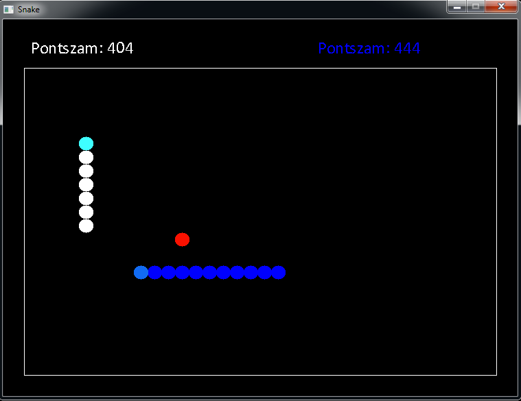A játékban téglákat kell leütni egy pattogó golyóval, amit a képernyő alján található ütővel lehet irányítani, és a pályán tartani. A téglákból véletlenszerűen extrák esnek ki, ezek az ütővel elkapva aktiválhatók. Az extrák a következők lehetnek: gyorsabb/lassabb golyó, szélesebb/keskenyebb ütő, plusz/mínusz élet. Az összes téglát leütve léphetünk a következő pályára. A játékhoz készítettem egy pályaszerkesztőt is, amivel egyszerűen lehet bővíteni a játékot.
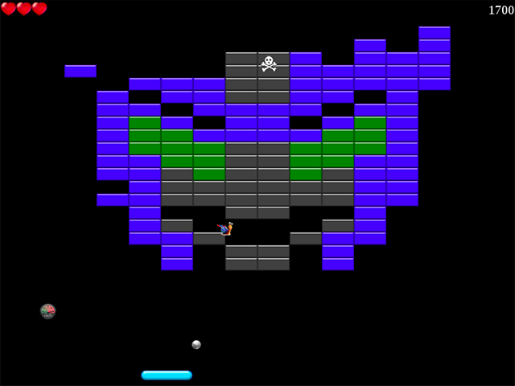Az én programom egy régi, Battle Citynek nevezett konzolos játékot utánoz le többé-kevésbé. Alapvetően a játék célja, hogy legyőzzük az ellenséges tankokat, miközben a képernyő alján, középen látható objektumot is megvédjük. Az én verzióm több hasonlóságot is mutat az eredetivel, többek között a pályát alkotó elemek és funkciójuk megegyezik (bár a téglafal kicsit másképp omlik). Emellett a legelső pálya tökéletes mása az ötletet adó játék legelső pályájának. Gondolom ez könnyen kitalálható, de a képen látható pálya nem szerepelt az eredetiben :) A mellékelt képen a három fajta ellenség közül a kettes (gyors) és a hármas (erős) szintűek láthatók.
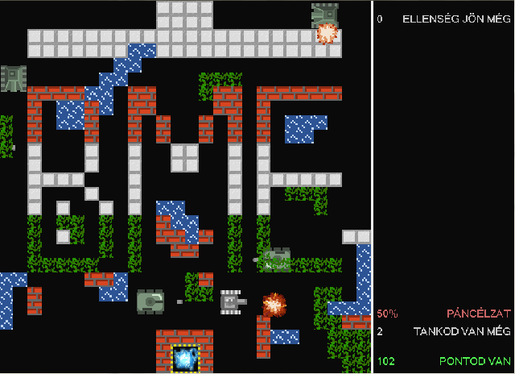A program a jól ismert Akasztófa játék SDL grafikát használó megvalósítása. A játékos által meghatározott hosszúságú véletlenszerűen kiválasztott szót kell kitalálni. Minden rossz tipp után eggyel kevesebb lehetőség lesz, a játék akkor ér véget, ha elfogytak a tippelési lehetőségek, vagy sikerült kitalálni. A szavak listája tetszőlegesen bővíthető, illetve törölni is lehet belőle, vagy akár az egész lecserélhető – például egy másik nyelvű listára.
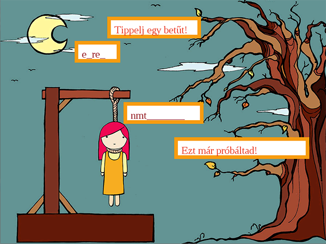